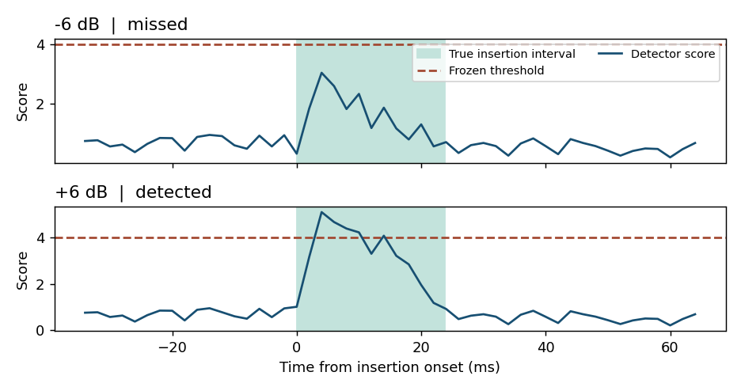
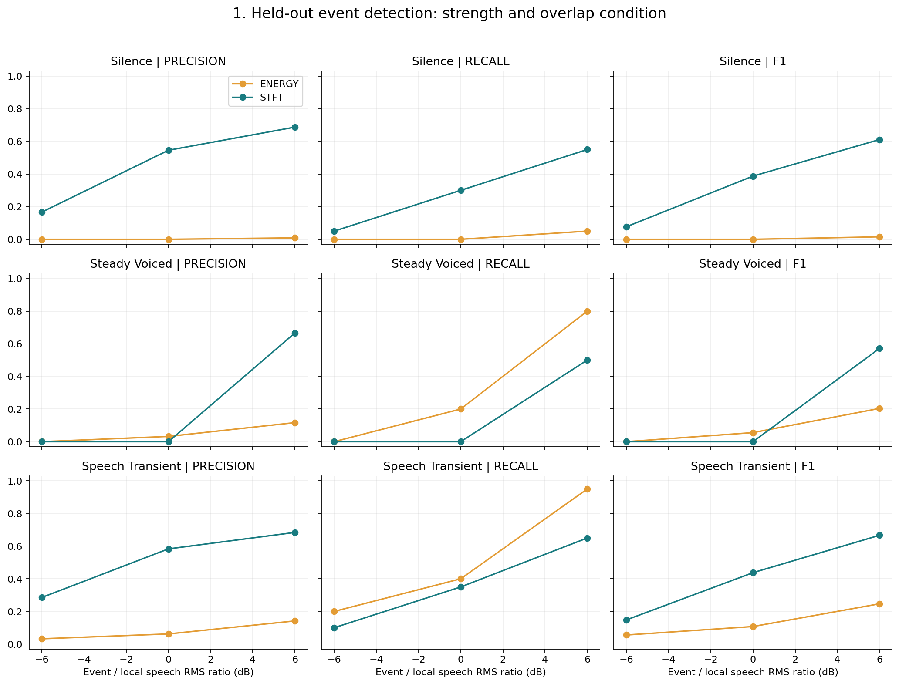
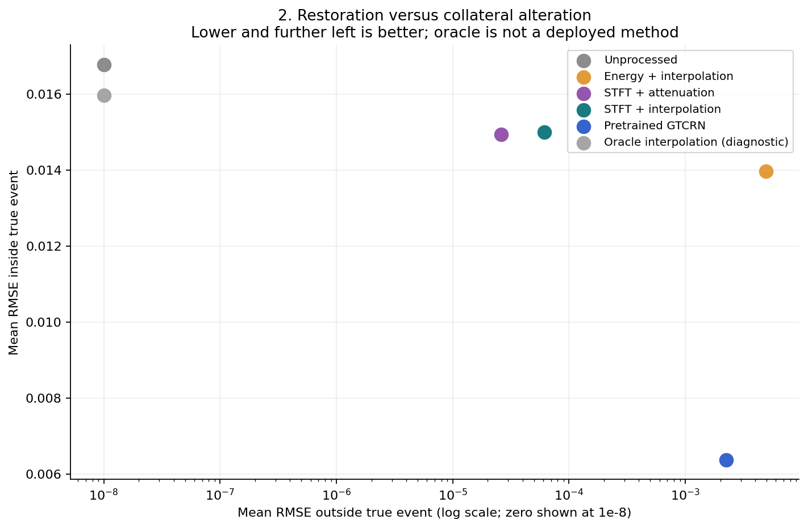
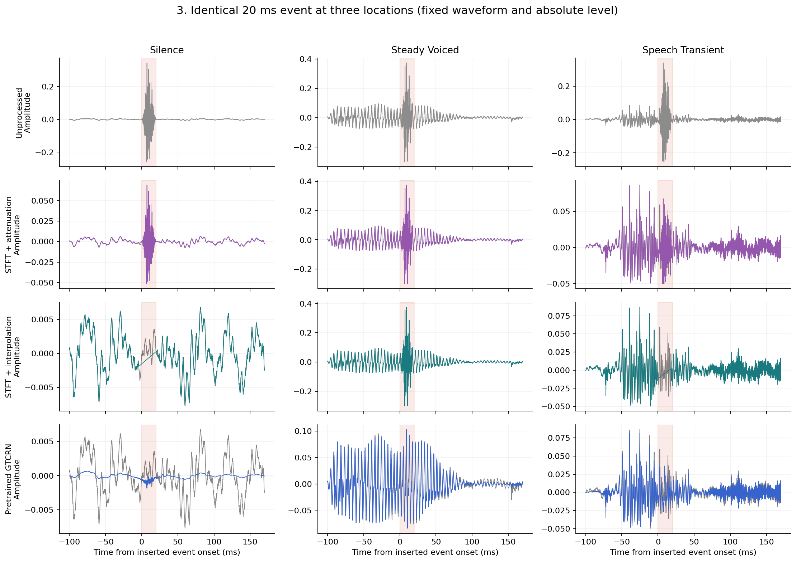
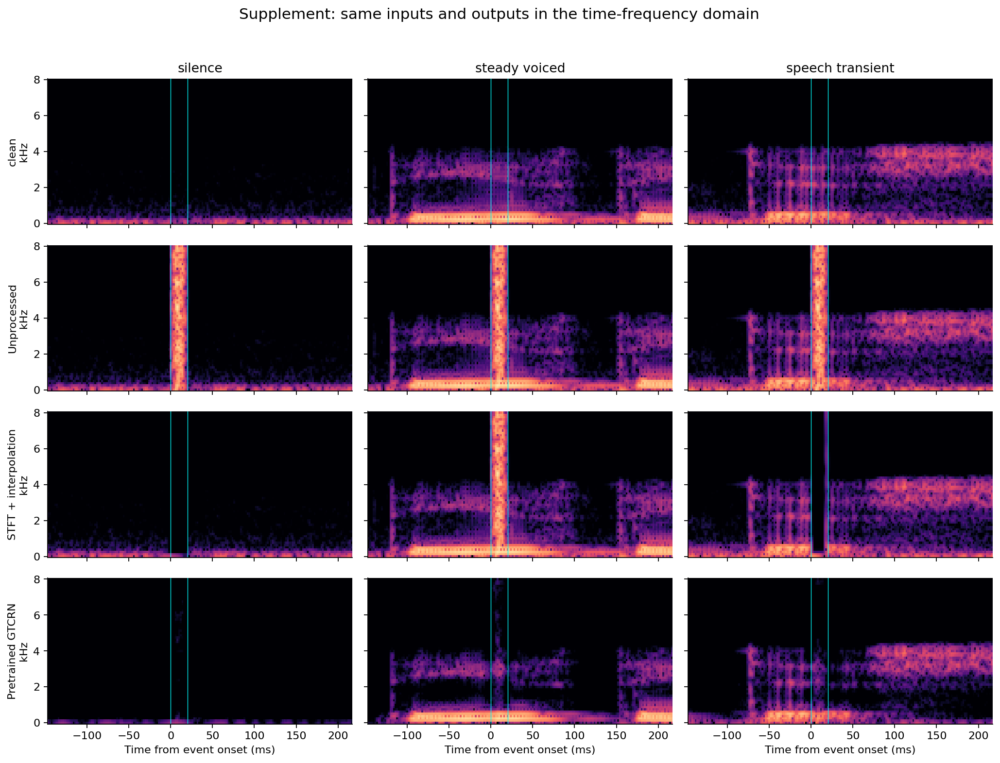
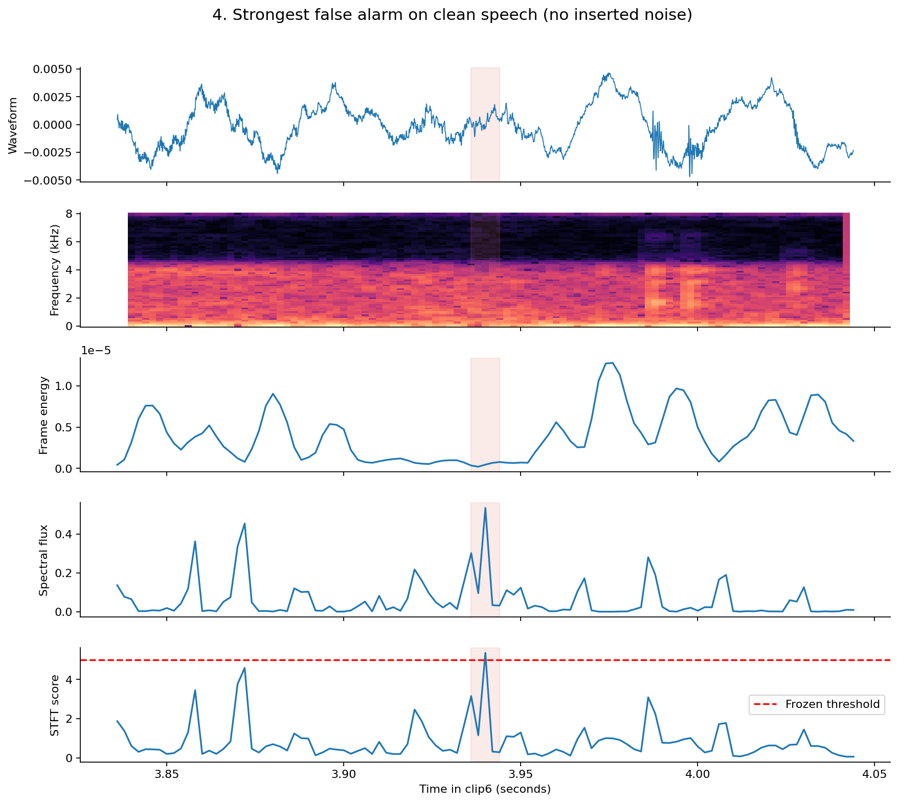
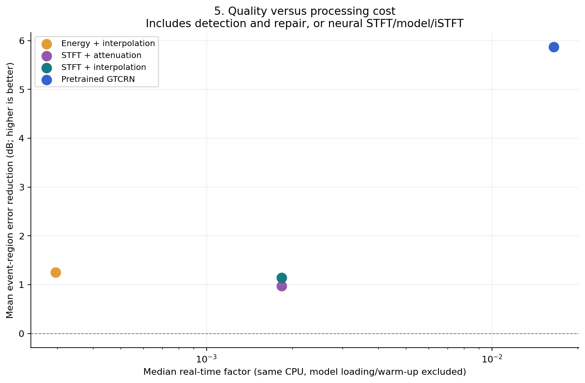

Sparse disturbance, two processing strategies.
The project compares detecting and repairing short intervals with enhancing the complete waveform using official pretrained GTCRN. We measure three things separately: whether the event is restored, whether surrounding speech changes, and what the processing costs.
180Held-out controlled mixtures; 90 development mixtures
0.362STFT event F1; energy baseline 0.080
5.87 dBMean GTCRN event-error reduction; not a whole-file quality score
The main result is a trade-off: GTCRN repairs the event more strongly, while conservative STFT-local repair preserves the uncorrupted reference more closely. The detector still misses many weak events.
Controlled inputs, frozen thresholds.
Six non-overlapping five-second clips come from the repository's existing speech recording. Clips 1–2 set detector thresholds; clips 3–6 are held out. Every inserted event has a known waveform, location and support mask. All systems receive identical noisy inputs.
- Events: 5 ms and 20 ms synthetic bursts; cropped ESC-50 door knock, mouse click and keyboard events.
- Levels: −6, 0 and +6 dB relative to local speech RMS, with a defined silence floor.
- Locations: pause, steady voiced candidate and speech-transient candidate; acoustic proxies, not phoneme alignment.
- Local DSP: adaptive energy detection, or energy/flux/bandwidth STFT detection, followed by attenuation/interpolation.
- Neural reference: official DNS3 GTCRN checkpoint, frozen weights, no training.
- Controls: clean-input false alarms and no-op preservation; true-mask interpolation as a diagnostic only.
All measurements use floating-point signals, fixed shared scaling and exact true-event intervals. Local methods preserve samples outside predicted intervals, but false detections can still damage clean speech.
Evaluation on unseen speakers
On 1,728 mixtures from three held-out speakers, event F1 was 0.084 for the original STFT detector, 0.154 after retuning STFT, and 0.475 for the short-context detector.
Two L2-ARCTIC speakers were used for development and three different speakers for testing. The test also includes three new ESC-50 event recordings. The retuned STFT comparison uses the same development data as the short-context detector.
| Detector | Precision | Recall | F1 | Sample recall | Clean false events |
|---|---|---|---|---|---|
| Energy (original threshold) | 0.066 | 0.203 | 0.100 | 0.103 | 70 |
| STFT (original threshold) | 0.206 | 0.053 | 0.084 | 0.011 | 6 |
| STFT (retuned) | 0.127 | 0.194 | 0.154 | 0.049 | 33 |
| Short-context detector | 0.466 | 0.484 | 0.475 | 0.212 | 14 |
Restoration and computation
| Pipeline | Event reduction (dB) | Outside-event RMSE | SI-SDR (dB) | STOI | Median CPU RTF |
|---|---|---|---|---|---|
| Unprocessed | 0.00 | 0.000000 | 28.49 | 0.985 | 0.00000 |
| STFT (original) | 0.13 | 0.000120 | 27.74 | 0.985 | 0.00081 |
| STFT (retuned) | 0.37 | 0.000695 | 25.50 | 0.984 | 0.00080 |
| Short-context repair | 0.89 | 0.000500 | 26.44 | 0.988 | 0.00091 |
| GTCRN | 6.87 | 0.001684 | 23.00 | 0.974 | 0.00915 |
Annotated /p/, /t/ and /k/ intervals
| Phone | Original hits | Original clean overlap | Retuned hits | Retuned clean overlap | Short-context hits | Short-context clean overlap |
|---|---|---|---|---|---|---|
| /p/ | 5/36 | 0/28 | 13/36 | 1/28 | 27/36 | 0/28 |
| /t/ | 0/54 | 0/32 | 3/54 | 5/32 | 37/54 | 2/32 |
| /k/ | 1/42 | 3/37 | 12/42 | 8/37 | 30/42 | 1/37 |
Clean overlap counts how often each detector touched a labelled phone with no injected event. Each corrupted token is tested at three levels.

Original single-recording benchmark
Event detection
| Detector | Precision | Recall | F1 | TP / FP / FN | Mean matched onset error (ms) |
|---|---|---|---|---|---|
| ENERGY | 0.047 | 0.289 | 0.080 | 52 / 1062 / 128 | 3.77 |
| STFT | 0.521 | 0.278 | 0.362 | 50 / 46 / 130 | 2.76 |
The STFT detector improves precision, not recall. Event matching permits partial interval overlap; sample-level recall is only 0.087, revealing incomplete event coverage.
| Acoustic location | Detector | Precision | Recall | F1 |
|---|---|---|---|---|
| silence | energy | 0.003 | 0.017 | 0.005 |
| silence | stft | 0.545 | 0.300 | 0.387 |
| speech transient | energy | 0.080 | 0.517 | 0.139 |
| speech transient | stft | 0.579 | 0.367 | 0.449 |
| steady voiced | energy | 0.052 | 0.333 | 0.091 |
| steady voiced | stft | 0.400 | 0.167 | 0.235 |
Restoration and collateral alteration
| Method | Event RMSE | Clean-region RMSE | Event error reduction (dB) | SI-SDR (dB) | STOI | Median RTF |
|---|---|---|---|---|---|---|
| Unprocessed | 0.016776 | 0.000000 | 0.00 | 32.95 | 0.971 | 0.00000 |
| Energy + interpolation | 0.013971 | 0.004933 | 1.25 | 12.13 | 0.877 | 0.00030 |
| STFT + attenuation | 0.014943 | 0.000026 | 0.97 | 33.77 | 0.972 | 0.00183 |
| STFT + interpolation | 0.014994 | 0.000062 | 1.15 | 33.64 | 0.974 | 0.00183 |
| GTCRN (DNS3 pretrained) | 0.006374 | 0.002243 | 5.87 | 17.89 | 0.899 | 0.01649 |
Errors are averaged across the held-out grid. GTCRN's stronger local repair comes with changes outside the event and lower whole-file STOI than the original sparse-corruption input. This is a result for this recording and checkpoint, not a general verdict on neural enhancement.
Already-clean input
| Method | False events / 20 s | False events / minute | Mean clean RMSE | Modified clean samples |
|---|---|---|---|---|
| Energy + interpolation | 24 | 72 | 0.00492323 | 3.5575% |
| STFT + interpolation | 1 | 3 | 0.00000564 | 0.0403% |
| GTCRN (DNS3 pretrained) | N/A | N/A | 0.00221101 | 100.0000% |
Twenty seconds of reference input are processed without inserted noise. The STFT detector has one false event; the energy baseline has 24. Numerically changing samples is not proof of audible degradation.
Runtime uses the same INTEL(R) XEON(R) PLATINUM 8573C CPU; median RTF excludes model loading and warm-up. RTF below one indicates offline throughput, not causal latency. GTCRN has 48,245 parameters including fixed mappings (23,669 trainable); parameter storage is 192,980 bytes. Process peak memory was not measured.
Five questions, five result figures.






Hear the same event in different speech contexts.
These examples move one identical event at a fixed absolute amplitude. They are separate from the local-RMS strength sweep. Playback files use a shared signal scale; analytical measurements use the original floating-point arrays.
Steady Voiced
Speech Transient
Real ESC-50 mouse click (transient overlap)
No formal listening experiment was performed. Examples are provided for informal inspection.
Limits that matter for interpreting these results.
- The original 180 mixtures use one source recording. The extension adds three independent test speakers, with dependent mixture variants within each utterance.
- Speech originally sampled at 8 kHz is upsampled for a general 16 kHz neural model. Domain mismatch may affect the comparison.
- Speech is OSR_us_000_0010_8k.wav from Open Speech Repository, verified against a byte-identical public mirror; it is not certified noise-free.
- The extension has two real recordings per event class in total, so broad event generalisation remains untested.
- The original location proxies are complemented by a separate annotated phone analysis. Burst peak timing within each phone is estimated.
- Conservative detection misses weak events; interpolation does not reconstruct complex voiced speech well.
- No impulse-specific neural model, new model training, streaming implementation or measured peak-memory comparison.
The supported conclusion is that local restoration, collateral alteration and computation should be measured separately for sparse corruption. The benchmark covers a small speaker sample and uses simple local interpolation.
Run and inspect the complete experiment.
python -m pip install -r requirements.txt python scripts/prepare_data.py python -m pytest -q python scripts/run_experiment.py python scripts/prepare_extended_data.py python scripts/run_extended_experiment.py python scripts/plot_extended_case.py python scripts/build_deliverables.py python scripts/render_reports.py final_report
Per-case results and manifest · Full report source · Revised proposal · Setup and attribution
Primary references: GTCRN (ICASSP 2024), Sparse adaptive filtering (2026), HHT impulsive detection (2021), and ESC-50. Full historical references are in the report.
ESC-50 source attribution: Robinhood76 (knock, CC BY-NC), MegaPenguin13 (click, CC0), Anton (typing, CC BY); dataset licence CC BY-NC 3.0. Official GTCRN is obtained from its authors' repository.